library(tidyverse)
library(janitor)Visualizing your data for reporting
Visualizing data is becoming a much greater part of journalism. Large news organizations are creating graphics desks that create complex visuals with data to inform the public about important events.
To do it well is a course on its own. And not every story needs a feat of programming and art. Sometimes, you can help yourself and your story by just creating a quick chart, which helps you see patterns in the data that wouldn’t otherwise surface.
Good news: one of the best libraries for visualizing data is in the tidyverse and it’s pretty simple to make simple charts quickly with just a little bit of code. It’s called ggplot2.
Let’s use some religion data and turn it into charts. First, let’s load libraries. When we load the tidyverse, we get ggplot2.
The first dataset we’ll use is from the U.S. Religion Census, which measures congregations and adherents for religious groups at the state level in 2020. Let’s load it and clean up the column names.
religion_census <- read_csv("data/usreligioncensus_state_2020.csv") |> clean_names()Rows: 51 Columns: 20
── Column specification ────────────────────────────────────────────────────────
Delimiter: ","
chr (7): State Code, State Name, Adherents as % of Population, Largest Body ...
dbl (8): Population Rank, Congregations Rank, Congregations per 100,000 Popu...
num (5): 2020 Population, Congregations, Adherents, # of Congregations, # of...
ℹ Use `spec()` to retrieve the full column specification for this data.
ℹ Specify the column types or set `show_col_types = FALSE` to quiet this message.One of the columns we’ll need – adherents as a percent of population – was stored with a percent sign, so R read it as text. Let’s fix that using parse_number(), which strips out percent signs and other non-numeric characters.
religion_census <- religion_census |>
mutate(
adherents_as_percent_of_population = parse_number(adherents_as_percent_of_population)
)
top_states <- religion_census |>
arrange(desc(congregations)) |>
head(10)
top_states# A tibble: 10 × 20
state_code state_name x2020_population population_rank congregations
<chr> <chr> <dbl> <dbl> <dbl>
1 48 Texas 29145505 2 29750
2 06 California 39538223 1 23567
3 12 Florida 21538187 3 17511
4 37 North Carolina 10439388 9 16200
5 42 Pennsylvania 13002700 5 15135
6 39 Ohio 11799448 7 13906
7 36 New York 20201249 4 13828
8 47 Tennessee 6910840 16 13397
9 13 Georgia 10711908 8 12891
10 17 Illinois 12812508 6 12153
# ℹ 15 more variables: congregations_rank <dbl>,
# congregations_per_100_000_population <dbl>,
# congregations_per_100_000_pop_rank <dbl>, adherents <dbl>,
# adherents_rank <dbl>, adherents_as_percent_of_population <dbl>,
# adherents_as_percent_of_population_rank <dbl>,
# largest_body_by_number_of_congregations <chr>,
# number_of_congregations <dbl>, percent_of_all_congregations <chr>, …Bar charts
The first kind of chart we’ll create is a simple bar chart.
It’s a chart designed to show differences between things – the magnitude of one thing, compared to the next thing, and the next, and the next.
So if we have a thing, like a state, and then a count for that state, we can make a bar chart.
So what does the chart of the top 10 states with the most religious congregations look like?
Now let’s create a bar chart using ggplot.
With ggplot, the first thing we’ll always do is draw a blank canvas that will house our chart. We start with our dataframe name, and then (|>) we invoke the ggplot() function to make that blank canvas. All this does is make a gray box, the blank canvas that will hold our chart.
top_states |>
ggplot()
Next we need to tell ggplot what kind of chart to make.
In ggplot, we work with two key concepts called geometries (abbreviated frequently as geom) and aesthetics (abbreviated as aes).
Geometries are the shape that the data will take; think of line charts, bar charts, scatterplots, histograms, pie charts and other common graphics forms.
Aesthetics help ggplot know what component of our data to visualize – why we’ll visualize values from one column instead of another.
In a bar chart, we first pass in the data to the geometry, then set the aesthetic.
In the codeblock below, we’ve added a new function, geom_bar().
Using geom_bar() – as opposed to geom_line() – says we’re making a bar chart.
Inside of that function, the aesthetic, aes, says which columns to use in drawing the chart.
We’re setting the values on the x axis (horizontal) to be the state name. We set weight to congregations, and it uses that value to “weight” or set the height of each bar.
One quirk here with ggplot.
After we’ve invoked the ggplot() function, you’ll notice we’re using a + symbol. It means the same thing as |> – “and then do this”. It’s just a quirk of ggplot() that after you invoke the ggplot() function, you use + instead of |>. It makes no sense to me either, just something to live with.
top_states |>
ggplot() +
geom_bar(aes(x=state_name, weight=congregations))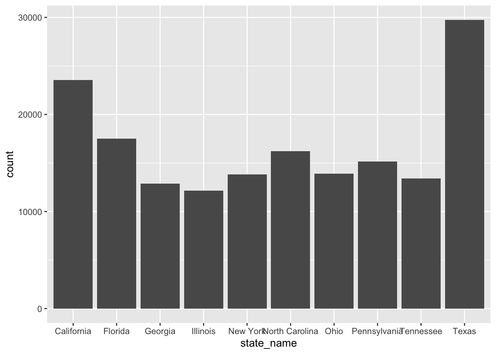
This is a very basic chart. But it’s hard to derive much meaning from this chart, because the states aren’t ordered from highest to lowest by congregations. We can fix that by using the reorder() function to do just that:
top_states |>
ggplot() +
geom_bar(aes(x=reorder(state_name, congregations), weight=congregations))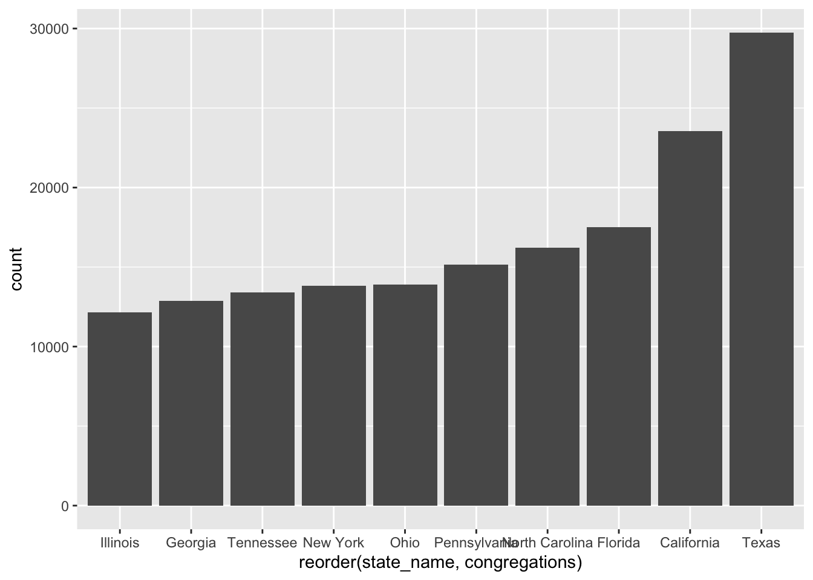
This is a little more useful. But the bottom is kind of a mess, with overlapping names. We can fix that by flipping it from a vertical bar chart (also called a column chart) to a horizontal one. coord_flip() does that for you.
top_states |>
ggplot() +
geom_bar(aes(x=reorder(state_name, congregations), weight=congregations)) +
coord_flip()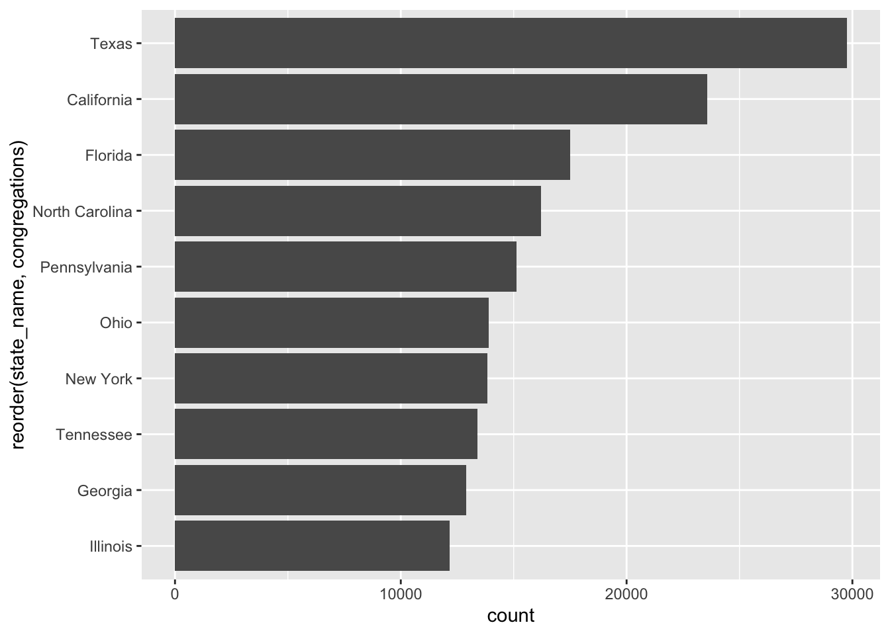
Is this art? No. Does it quickly tell you something meaningful? It does. Texas has the most congregations, followed by California and then several Southern states.
We’re mainly going to use these charts to help us in reporting, so style isn’t that important.
But it’s worth mentioning that we can pretty up these charts for publication, if we wanted to, with some more code. To style the chart, we can change or even modify the “theme”, a kind of skin that makes the chart look better.
It’s kind of like applying CSS to html. Here I’m changing the theme slightly to remove the gray background with one of ggplot’s built in themes, theme_minimal()
top_states |>
ggplot() +
geom_bar(aes(x=reorder(state_name, congregations), weight=congregations)) +
coord_flip() +
theme_minimal()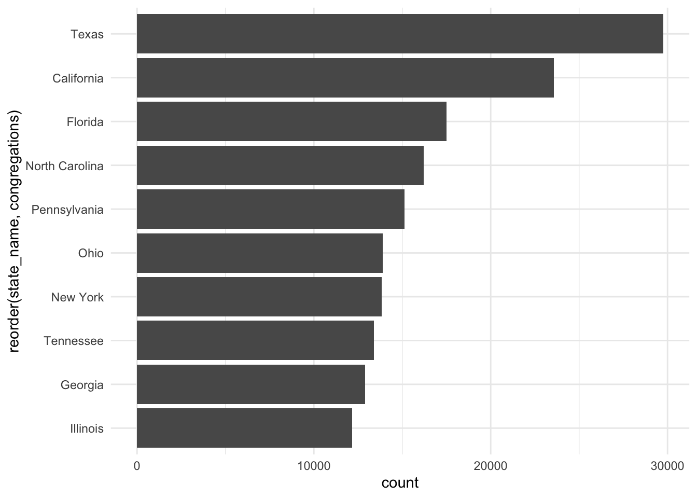
The ggplot universe is pretty big, and lots of people have made and released cool themes for you to use. Want to make your graphics look kind of like The Economist’s graphics? There’s a theme for that.
First, you have to install and load a package that contains lots of extra themes, called ggthemes.
#install.packages('ggthemes')
library(ggthemes)And now we’ll apply the economist theme from that package with theme_economist()
top_states |>
ggplot() +
geom_bar(aes(x=reorder(state_name, congregations), weight=congregations)) +
coord_flip() +
theme_economist()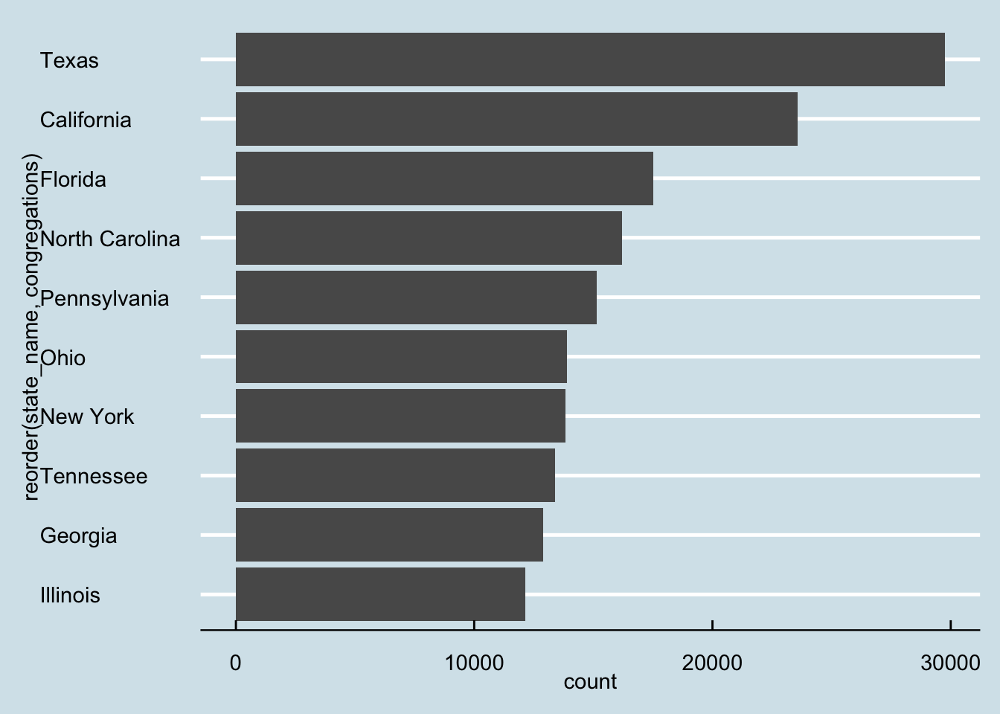
Those axis titles are kind of a mess. Let’s change them to something more readable. And while we’re at it, let’s add a basic title and a source as a caption. We’ll use a new function, labs(), which is short for labels.
top_states |>
ggplot() +
geom_bar(aes(x=reorder(state_name, congregations), weight=congregations)) +
coord_flip() +
theme_economist() +
labs(
title="States With the Most Religious Congregations",
x = "state",
y = "total congregations",
caption = "source: U.S. Religion Census, 2020"
)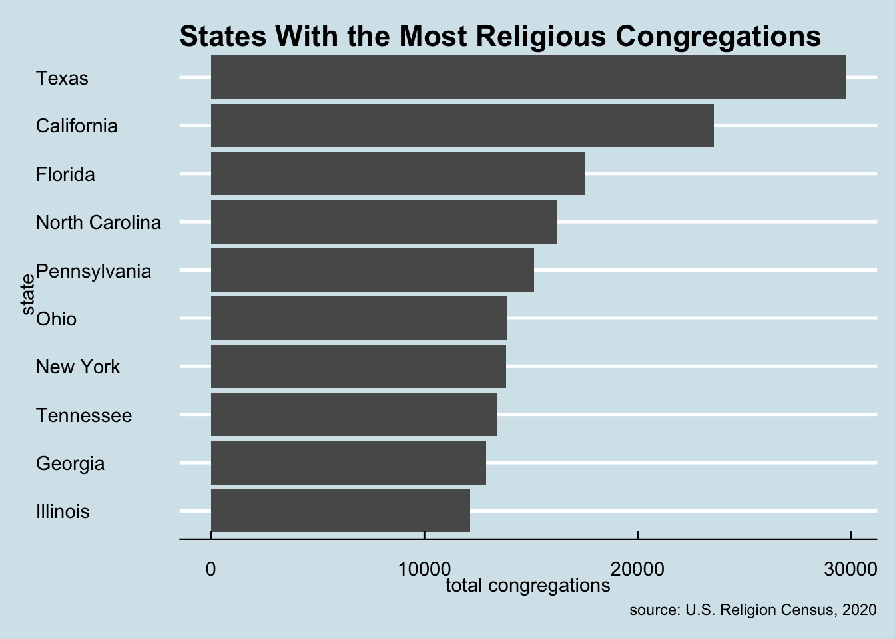
Viola. Not super pretty, but good enough to show an editor to help them understand the conclusions you reached with your data analysis.
Line charts
Let’s look at how to make another common chart type that will help you understand patterns in your data.
Line charts can show change over time. It works much the same as a bar chart, code wise, but instead of a weight, it uses a y.
We’ll use a small dataset from CARA (the Center for Applied Research in the Apostolate) that tracks Catholic Church statistics over several decades.
cara <- read_csv("data/cara.csv")Rows: 5 Columns: 9
── Column specification ────────────────────────────────────────────────────────
Delimiter: ","
dbl (9): year, total_priests, diocesan_priests, religious_priests, permanent...
ℹ Use `spec()` to retrieve the full column specification for this data.
ℹ Specify the column types or set `show_col_types = FALSE` to quiet this message.cara# A tibble: 5 × 9
year total_priests diocesan_priests religious_priests permanent_deacons
<dbl> <dbl> <dbl> <dbl> <dbl>
1 1965 59426 36467 22762 0
2 1980 58398 35627 22771 4093
3 1995 49054 32349 16705 10932
4 2010 39993 27182 12811 16649
5 2024 33589 23510 10064 18341
# ℹ 4 more variables: parishes <dbl>, parishes_without_resident_priest <dbl>,
# pct_diocesan_priests_active <dbl>, catholic_population <dbl>This data has just five rows – snapshots of the Catholic Church in America in 1965, 1980, 1995, 2010 and 2024. But even with a small dataset, a line chart can reveal a powerful trend.
Let’s chart the number of total priests over time.
cara |>
ggplot() +
geom_line(aes(x=year, y=total_priests))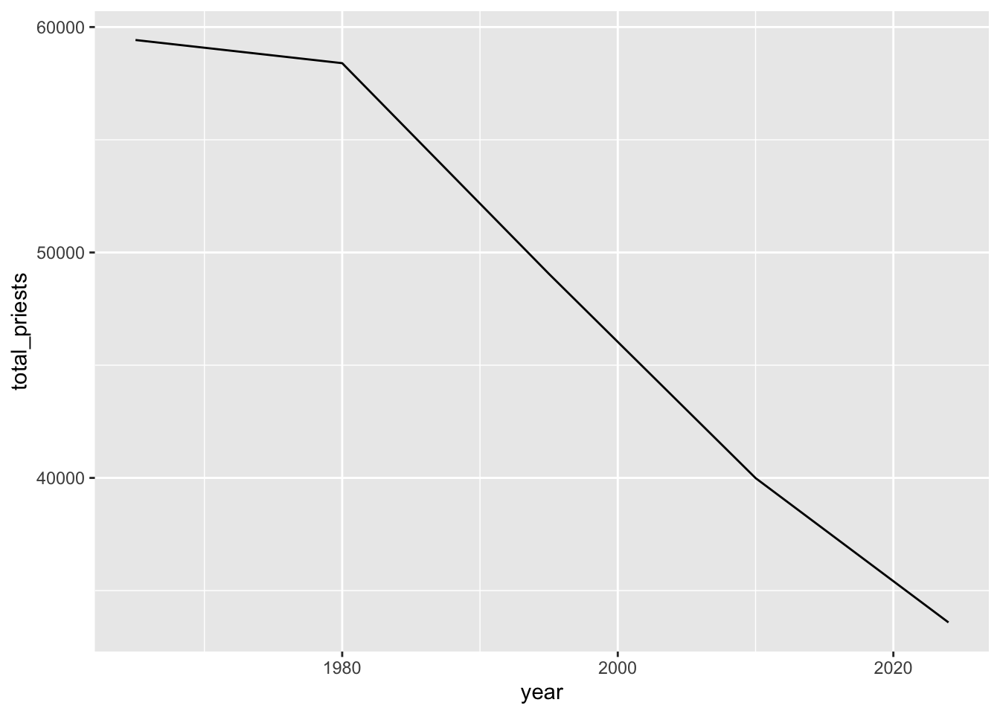
The trend is clear: the number of Catholic priests in the U.S. has declined steadily since 1965. But with only five data points, the line alone can feel a bit sparse. Let’s add points to mark each year’s value so the actual observations stand out.
cara |>
ggplot() +
geom_line(aes(x=year, y=total_priests)) +
geom_point(aes(x=year, y=total_priests))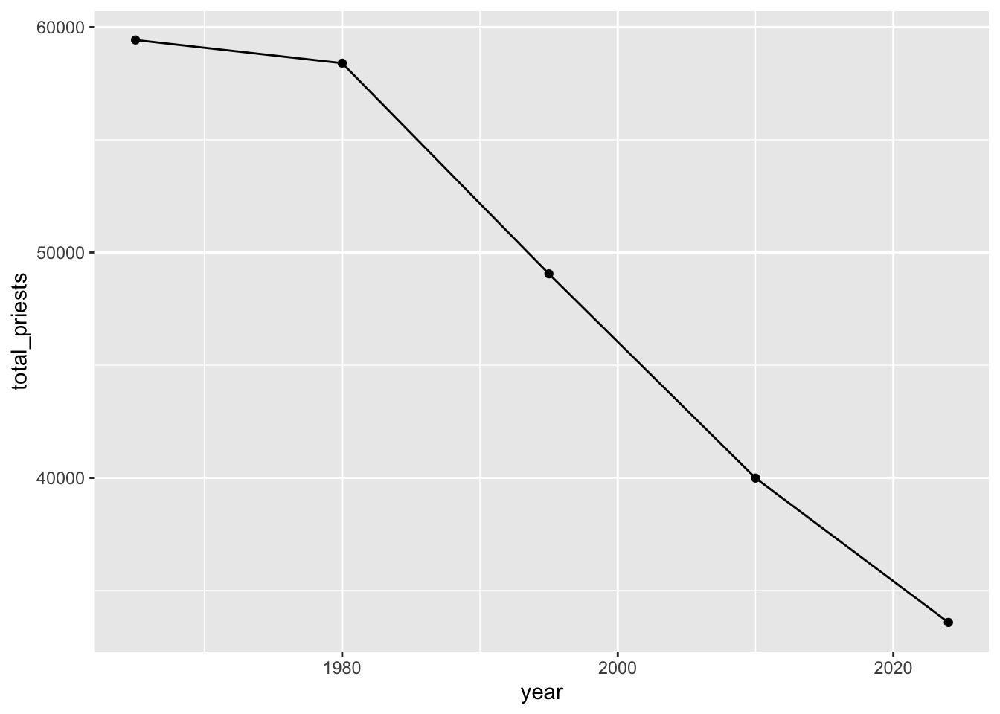
Now let’s style it up with labels and a theme, just like we did with the bar chart.
cara |>
ggplot() +
geom_line(aes(x=year, y=total_priests)) +
geom_point(aes(x=year, y=total_priests)) +
theme_minimal() +
labs(
title="The Decline of Catholic Priests in the U.S.",
x = "year",
y = "total priests",
caption = "source: CARA"
)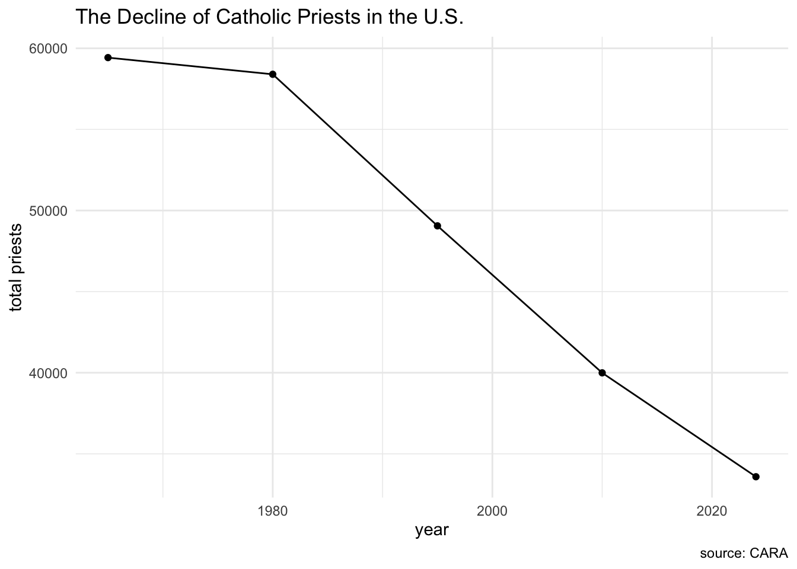
That tells a pretty compelling story in a single chart. The Catholic Church went from nearly 60,000 priests in 1965 to under 34,000 in 2024.
Scatterplots
There’s one more basic chart type that’s useful for exploring data: the scatterplot. Scatterplots show the relationship between two numeric variables. Each dot represents one observation, and its position shows the values of the two variables.
Let’s go back to our state religion census data and ask: do states with a higher percentage of religious adherents tend to have more or less religious diversity?
We’ll use the full 50-state dataset (plus D.C.) for this, plotting each state’s adherents percentage on the x axis and its diversity index on the y axis.
religion_census |>
ggplot() +
geom_point(aes(x=adherents_as_percent_of_population, y=diversity_index_value))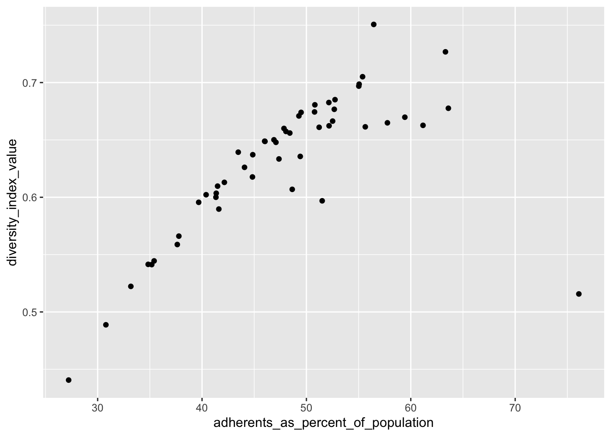
Interesting, right? There does seem to be a pattern. Let’s add labels and a theme to make it clearer, and a trend line to see the overall direction.
religion_census |>
ggplot() +
geom_point(aes(x=adherents_as_percent_of_population, y=diversity_index_value)) +
geom_smooth(aes(x=adherents_as_percent_of_population, y=diversity_index_value), method="lm", se=FALSE) +
theme_minimal() +
labs(
title="Religious Adherence vs. Diversity by State",
x = "adherents as % of population",
y = "religious diversity index",
caption = "source: U.S. Religion Census, 2020"
)`geom_smooth()` using formula = 'y ~ x'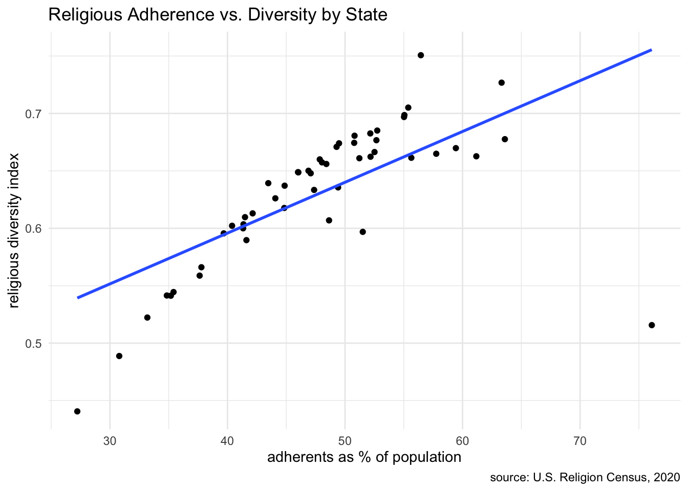
The geom_smooth() function adds a trend line to the scatterplot. The method="lm" tells it to fit a straight line (linear model), and se=FALSE hides the confidence interval shading to keep it clean. This makes the overall pattern easier to see at a glance.
We’re just scratching the surface of what ggplot can do, and chart types. There’s so much more you can do, so many other chart types you can make. But the basics we’ve shown here – bar charts, line charts and scatterplots – will get you started.